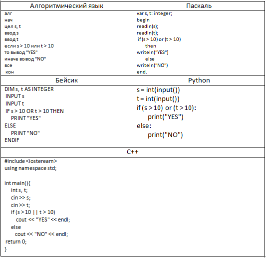

Шестое задание - это в основном задание на внимательность, как я думаю. Единственное что нужно понять, это что с чем нужно сравнивать.
Ниже приведена программа, записанная на пяти языках программирования:

Было проведено 9 запусков программы, при которых в качестве значений переменных вводились следующие пары чисел (s, t):
(1, 2); (11, 2); (1, 12); (11, 12); (–11, –12); (–11, 12); (–12, 11); (10, 10); (10, 5).
Сколько было запусков, при которых программа напечатала «YES»?.
- 1) Для того чтобы решить номер, нужно сравнить числа из условия с числами в вопросе.
- 2) Так например в данной задачке нужно, чтобы хотя бы одна из переменных ( s или t) были больше чем в вопросе, так как в условии стоит переменная "OR".
- 3) Таким образом нужно сравнить все пары чисел из условия и вопроса и просто дать ответ на поставленый вопрос. (в этой задаче 5 пар чисел удовлетворяют условию)